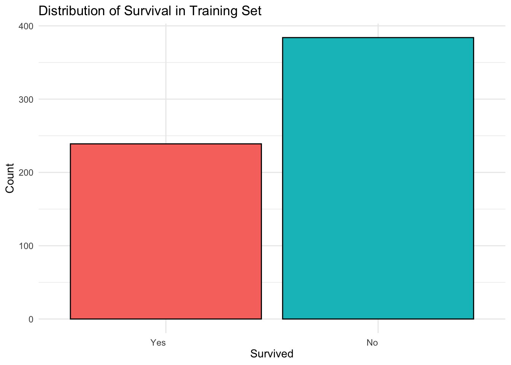
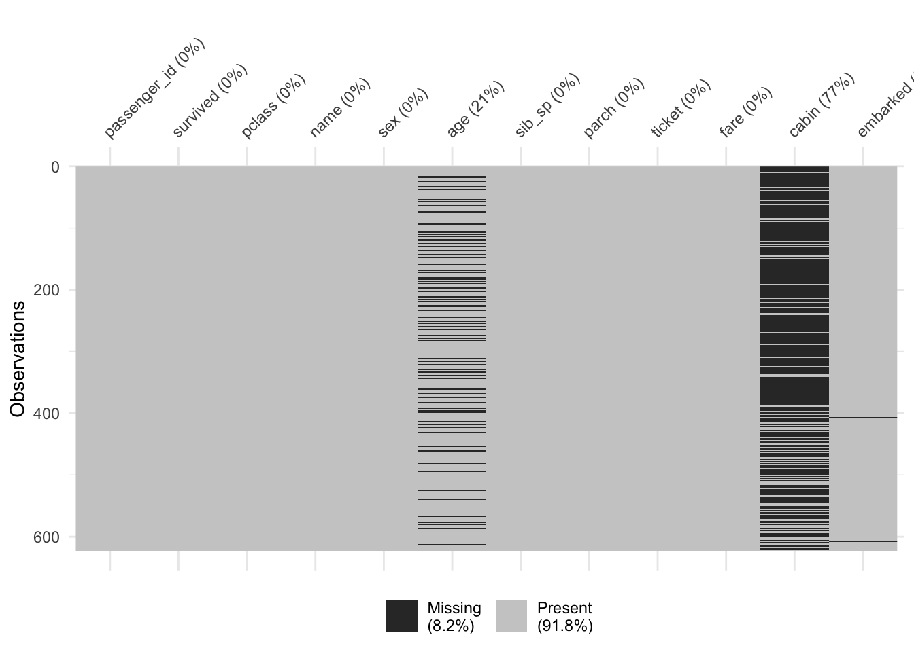
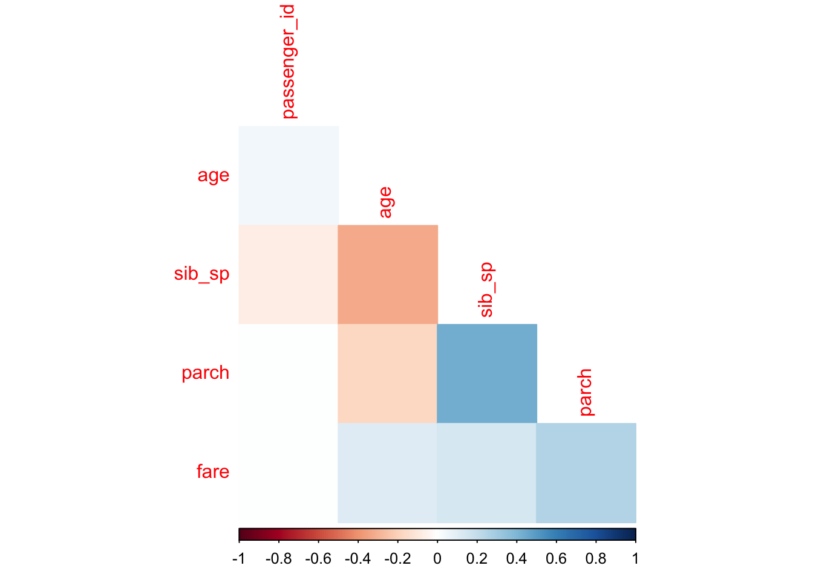

library(ISLR)
library(ISLR2)
library(tidyverse)
library(tidymodels)
library(forcats)
library(ggthemes)
library(naniar)
library(corrplot)
library(corrr)
library(klaR)
library(ggplot2)
tidymodels_prefer()
titanic_data <- read.csv('data/titanic.csv')
titanic_data_1 <- titanic_data %>%
mutate(survived = factor(survived, levels = c("Yes", "No"))) %>%
mutate(pclass = factor(pclass))Classification Case: Titanic Survival Prediction
Prerequisites
Copy and paste the following block of code into a new script to load the required packages and data used for this example. If an error appears, then you likely don’t have one of the libraries installed.
Partition
In the process of model construction, a crucial step involves partitioning the data into training and testing sets. The model originally learns patterns from the training set, while the testing set serves as a benchmark to test the performance of the model on unseen data.
The initial_split(titanic_data_1, strata = survived, prop = 0.7) function is used to allocate 70% of the titanic data set into a training set and allocating the other 30% into a testing set while stratifying by the survived variable.
Note that training(parition) and testing(parition) are used to retrieve the training and testing sets, respectively.
set.seed(3435)
parition <- initial_split(titanic_data_1, strata = survived, prop = 0.7)
train_set <- training(parition)
test_set <- testing(parition)Note that we need to stratify by survived because there is an uneven proportion of people who survived the titanic versus those who did not.

K-Folds Cross Validation
K-fold cross validation allows us to train and evaluate the performance of our model on \(k\) different partitions of the training set, reducing the risk of over fitting. The vfold_cv(train_set, v = 5, strata = "survived") function will create 5 training folds of our training set while stratifying by the survived variable. It is left to the reader to look further into k-fold cross validation.
train_folds <- vfold_cv(train_set, v = 5, strata = "survived")Data Preparation
We will preprocess our data using a recipe from tidymodels. Building a recipe will allow us to provide instructions for preparing and transforming the data before using it to train our model.
The recipe() function will initialize the creation of a recipe, setting survived as the target variable and pclass, sex, age, sib_sp, parch, and fare as predictors.
train.recipe <- recipe(survived ~ pclass + sex + age + sib_sp + parch + fare, data = train_set) %>%
step_impute_linear(age,
impute_with = imp_vars(fare)) %>%
step_dummy(all_nominal_predictors()) %>%
step_interact(terms = ~ starts_with('sex'):fare + age:fare)Note that there is some missing data in the age variable, using step_impute_linear(age, impute_with = imp_vars(fare)) we will impute missing values of age with linear regression, using fare as a predictor.

[ Explain use of interaction terms]

The step_dummy(all_nominal_predictors()) function simply turns all the nominal predictors into dummies.
Model Fitting
The first step is to specify the model’s hyper parameters, engine, and mode.
rf_class_spec <- rand_forest(mtry = tune(),
trees = tune(),
min_n = tune()) %>%
set_engine("ranger", importance = "impurity") %>%
set_mode("classification")The rand_forest(mtry = tune(), trees = tune(), min_n = tune()) function is used to specify the hyper parameters being tuned.
mtry: Number of predictors used to train each decision tree in the random forest, e.g, if we want to build decision trees that were each trained on 3 random predictors of the original training set, then we would setmtry = 3.trees: Number of decision trees to be included in the random forest, e.g., if we only wanted our forest to contain 4 decision trees, then we would settrees = 4.min_n: Minimum number of observations required for further splitting, e.g., if the number of observations within a node falls below this threshold during the tree-building process, then further splitting of this node is halted and it becomes a terminal node.
The set_engine("ranger", importance = "impurity") function allows us to use the random forest implementation from the “ranger” package, and it set the importance method as “impurity”. Note that variable importance is the measure of the contribution that each predictor makes to the predictive performance of the model. The decision trees of a random forest are split on different subsets of predictors, and the impurity method calculates importance by measuring how much each predictor is involved in reducing impurity across all trees.
The set_mode("classification") function simply specifies the model as a classification model.
Next, we simply need to define a model building workflow which is going to combine our random forest classification model (rf_class_spec) and our data preparation recipe (train.recipe).
rf_class_wf <- workflow() %>%
add_model(rf_class_spec) %>%
add_recipe(train.recipe)Afterwards, we will set up a tuning grid with the grid_regular() function to experiment with different variations of the hyper parameters within their defined ranges and apply the tuning grid to the tune_grid() function to find the most optimal configuration.
rf_grid <- grid_regular(mtry(range = c(1, 3)),
trees(range = c(200, 600)),
min_n(range = c(10, 20)),
levels = 8)
#tuning the random forest model
tune_rf <- tune_grid(
rf_class_wf,
resamples = train_folds,
grid = rf_grid
)Finally, we will extract the best configuration of the hyper parameters using the select_best() function, create a finalized version of the random forest workflow with finalize_workflow() , and fit the finalyzed model using the entire training set with fit().
best_rf <- select_best(tune_rf)Warning: No value of `metric` was given; metric 'roc_auc' will be used.rf_final <- finalize_workflow(rf_class_wf, best_rf)
rf_final_fit <- fit(rf_final, data = train_set)